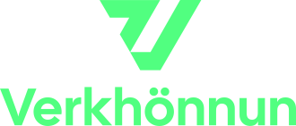

Beinar slóðir á merki fyrirtækisins til notkunar í skýrslum, kynningum og öðru efni. PNG er í prentgæðum með gagnsæjum bakgrunni; SVG er vigurskrá sem heldur skerpu í hvaða stærð sem er. Síðan er ekki tengd úr valmynd og er lokuð fyrir leitarvélum.
Vísaðu Claude á þessa síðu — https://verkhonnun.is/merki.html — eða beint á staka
slóð hér að neðan. Veldu SVG þegar skjalið styður það (skarpast), annars PNG.
Grænu útgáfurnar eru fyrir dökkan bakgrunn, dökkbláu fyrir ljósan.
Aðalmerkið. Notist á ljósum bakgrunni — sjálfgefið val í skýrslum og bréfsefni.
https://verkhonnun.is/assets/merki/verkhonnun-wordmark-navy.pnghttps://verkhonnun.is/assets/merki/verkhonnun-wordmark-navy.svgNotist á dökkum bakgrunni, t.d. forsíðum og kynningarglærum.
https://verkhonnun.is/assets/merki/verkhonnun-wordmark-green.pnghttps://verkhonnun.is/assets/merki/verkhonnun-wordmark-green.svgTáknið yfir nafninu. Hentar þar sem plássið er hlutfallslega hærra en breiðara.
https://verkhonnun.is/assets/merki/verkhonnun-stacked-navy.pnghttps://verkhonnun.is/assets/merki/verkhonnun-stacked-navy.svgSama uppsetning fyrir dökkan bakgrunn.

https://verkhonnun.is/assets/merki/verkhonnun-stacked-green.pnghttps://verkhonnun.is/assets/merki/verkhonnun-stacked-green.svgV-táknið án nafns. Fyrir vatnsmerki, blaðsíðuhaus, fótnótur og lítil svæði.
https://verkhonnun.is/assets/merki/verkhonnun-symbol-navy.pnghttps://verkhonnun.is/assets/merki/verkhonnun-symbol-navy.svgV-táknið fyrir dökkan bakgrunn.
https://verkhonnun.is/assets/merki/verkhonnun-symbol-green.pnghttps://verkhonnun.is/assets/merki/verkhonnun-symbol-green.svgDökkblár #112B3D · Grænn #51FF80 · Letur: General Sans.
Merkið má ekki teygja, snúa, endurlita eða setja á bakgrunn sem dregur úr læsileika.